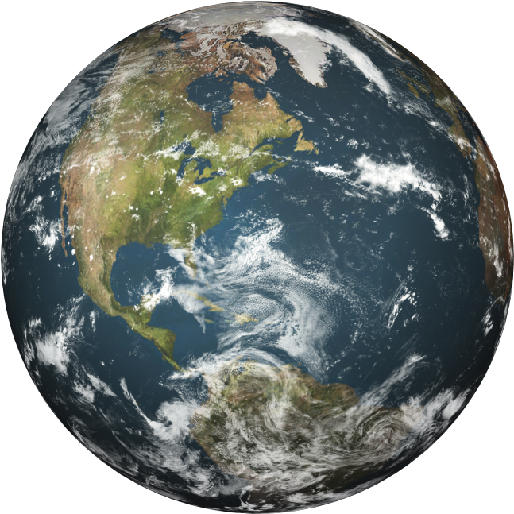

Earth | Земля
Третья планета солнечной системы - Земля.
Третья планета от Солнца и единственная в нашей системе, где на поверхности есть жидкая вода, без которой не смогла бы развиться жизнь на планете. По крайней мере, жизнь в том виде, в котором мы её знаем. Радиус Земли равен 6371 км и, в отличие от остальных небесных тел нашей системы, более 70% её поверхности покрыто водой. Остальное пространство занимают материки. Ещё одной особенностью Земли являются тектонические плиты, скрытые под мантией планеты. При этом они способны перемещаться, хоть и с очень малой скоростью, что со временем вызывает изменение ландшафта. Скорость перемещения планеты по ней – 29-30 км/сек.
Один оборот вокруг своей оси занимает почти 24 часа, причем полное прохождение по орбите длится 365 суток, что намного больше в сравнении с ближайшими планетами-соседями. Земные сутки и год также приняты как эталон, но сделано это лишь для удобства восприятия временных отрезков на остальных планетах. У Земли имеется один естественный спутник – Луна.
Credits:
website: Drobkov Kirill
information: Pilyavets Dominik